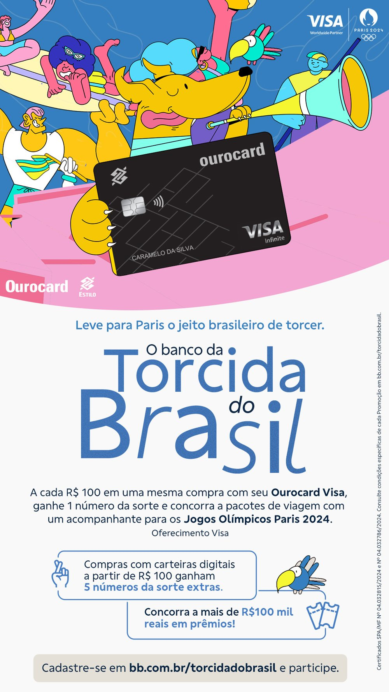
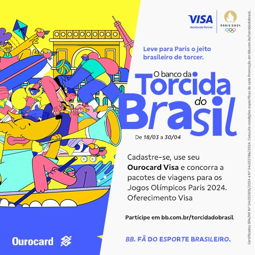
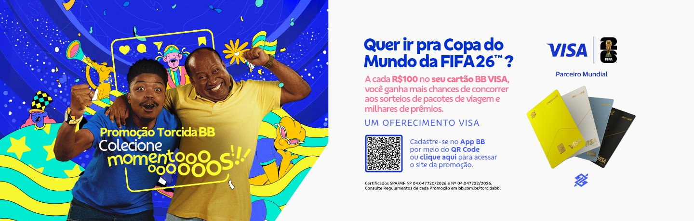

Retail version of the square format, Paris 2024.
The key visual had to serve four audience lines (retail, premium, consumer and business) in formats that ranged from web banners to WhatsApp cards. Everything was due in two days.
I handled the volume as a design problem. Master files made it quick to swap the card, the offer and the call to action, and the pieces were batched by format and delivery date.
More than 50 pieces went out in 48 hours and were approved with minor copy changes. The campaign ran in digital media and out-of-home.
Paris 2024, format by format
Banners at 550 × 330, square feed posts, vertical stories and WhatsApp cards with a QR code, each adjusted for its audience.



Two days, three moves
 01
01
Learn the key visual
PILOTO.TV delivered a party: Caramelo the dog, vuvuzelas and the Arc de Triomphe in campaign colours. I worked out which parts could move, shrink or leave without spoiling it.
Build files for swapping
Each audience line changes the card, the offer and the call to action. The master files keep those three easy to replace.
Schedule by delivery
Pieces were grouped by format and ordered by due date, which kept the look consistent under pressure.
Back for the 2026 World Cup
Two years later the supporters returned with a new promotion. My part was the design system and the production of pieces for web banners, e-mail, self-service terminals and lift screens.
